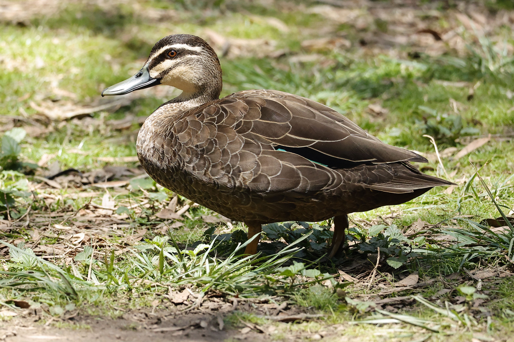

The Pacific Black Duck is one of Australia's most widespread and adaptable ducks. It can live in an impressive variety of aquatic habitats, from forest pools and rivers to lakes, swamps, tidal mudflats and coastal wetlands. Its dark plumage and distinctive facial markings help separate it from many other Australian ducks. It feeds mainly by dabbling, tipping its body forward so that its head and neck reach underwater while its tail points upward. Plant material forms much of its diet, although aquatic insects, molluscs and crustaceans are also eaten. It is closely related to the Mallard and the two species can interbreed where introduced Mallards occur.